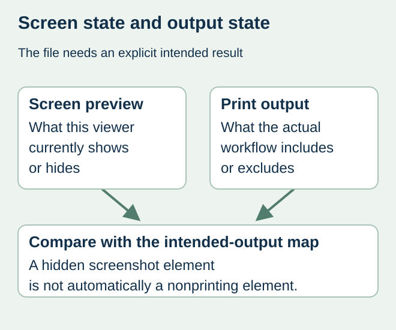
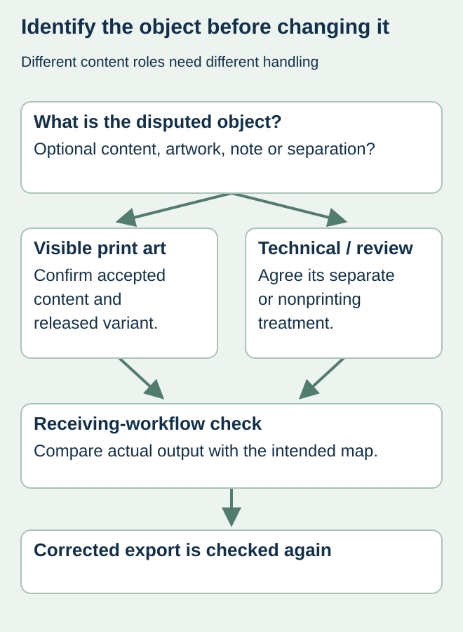

A designer hides a measurement overlay and sends a screenshot for approval. The converter opens the PDF and sees additional content in its output preview. The file may contain optional layer settings whose screen state and print behavior were never reconciled.
Specify the intended printed content, then ask prepress to verify the actual production file in the receiving workflow. Hiding an element in one viewer is not a complete output instruction. Keep optional PDF content, source-design layers and ink separations distinguishable in the discussion.


Name the kind of layer being reviewed
Adobe’s PDF-layer documentation explains optional layers and their viewing and output controls. That is different from assuming every source-design layer becomes an optional layer in an exported PDF. The export route and receiving workflow determine what is actually present and how it is processed.
Ask the file owner to identify whether the disputed element is optional PDF content, a normal artwork object, a comment or a technical separation. A cut instruction, an approval annotation and a visible decorative border can need different treatment. Their appearance in a screenshot does not identify their production role.
Create an intended-output map
| Element | Intended role | Evidence requested |
|---|---|---|
| Brand and product copy | Printed visible content | Matches accepted copy in actual output |
| Dimensions or review note | Reference only, if that is the agreed role | Excluded from the production output by the agreed method |
| Cut or finish instruction | Technical production information | Converter confirms supported separate treatment |
| Optional variant content | Only the released version is active | Actual export and output contain the intended variant |
| Unidentified layer | Unresolved | File owner establishes its role before release |
Avoid a blanket instruction to delete every hidden object. Some information may be intentionally retained for production, and removing it without agreement can destroy a required instruction. Equally, leaving reference notes present because they were hidden on the designer’s laptop does not resolve their output behavior.


Use a receiving-workflow specimen
Have the converter identify the file and output arrangement used for the check. Compare the intended-output map with its resulting preview or proof. Keep the evidence and any exclusions with the artwork revision. The buyer approves visible content within its authority while prepress confirms its own technical treatment.
For a hypothetical food jar, the designer supplies two variants inside one layered PDF. A review screenshot shows only one, but the print handoff never identifies which state is authoritative. The solution is a controlled released output and an explicit variant decision, rather than asking the printer to guess from the product name.
Recheck the exported result after correction
When a layer or export setting changes, compare the new production object again. Preserve the earlier file as history and mark which output replaces it. If the correction also changes white ink, cut geometry or product copy, return those affected questions to the relevant reviewers.
Use the white-object guide for the separate overprint and separation question. Layer-state review confirms content inclusion; it does not by itself establish color, legal copy, label dimensions or physical print performance.
Discuss the unresolved label requirement
Send the production PDF revision, intended printed and nonprinted elements, observed layer mismatch and receiving converter’s requirement. Keep any review-only export clearly labeled. Prepare a label specification inquiry. The contact page opens an email draft and lists email or WhatsApp for attachments. Supply, proof options, testing, pricing and timing require project confirmation.